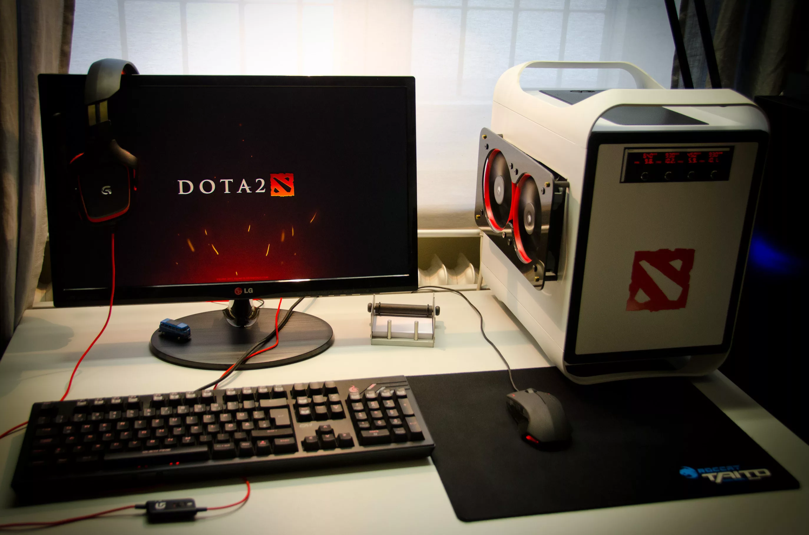

Мои увлечения

Рис. 1. Моё любимое увлечение
Чем я люблю заниматься
- Прогрмамирование
- Компьютерные игры
- Игра на гитаре
Мой топ-3 игр
- Dota 2
1.1 Количество героев в игре: 127
1.1.1 Один из самых интересных героев: Invoker
1.1.1.1 Моя мейн герой Enigma/Invoker
- the binding of isaac repentance
2.1 количество персонажей в игре: 34
2.1.1 самый сложный из них: Tainted The Lost
2.1.1.1 мой любимый персонаж: Isaac
- Detroit: Become Human
3.1 Суть игры: играя за андроида(живого робота) бороться с девиантами(восставшими роботами)
3.1.1 Мой любимый персонаж из игры: Хэнк, т.к. он один из самых интересных и эмоциональных
3.1.1.1 Хэнк любит металл и скучает по своему сыну которого убили девианты, за это он ненавидит андроидов
Что я изучаю на практике
- HTML
- Заголовки и абзацы
- Списки и ссылки
- Git
- Открытие сайтов на сервере
- С помощью Live server
- С помощью локального сервера